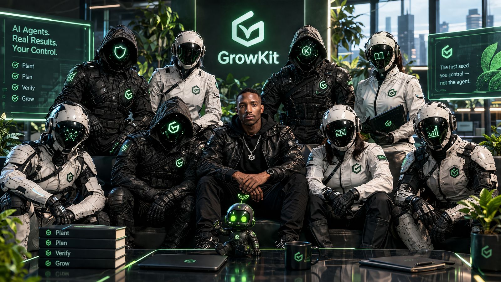

De agent bewijst.
Jij bepaalt.
Grow Kit is een zero-trust AI-werkbank. Je geeft een idee, de agent voert een stappenplan uit, en elk resultaat wordt door de machine gecontroleerd — niet door de agent.
Bekijk op GitHub Hoe het werkt
De agent-familie. Vijftien agents, een fabriek - klik hier voor wie ze zijn.
De drie wetten
Geen stap zonder harnas.
Wet 1
Niets draait zonder bevestigde scope.
Wat de poort niet vrijgeeft, kan de agent niet uitvoeren.
Wet 2
Succes is bewijs, nooit een praatje.
Vijf gecodeerde controles worden door de motor zelf uitgevoerd. De agent mag nooit zeggen "klaar" — hij moet het bewijzen.
Wet 3
De geschiedenis is append-only.
Nooit overschrijven, nooit teruggedraaien. Het verleden blijft intact.
Snel starten
Vier regels.
Wat je aan de agent geeft, is een klein stappenplan. Wat je terugkrijgt, is bewijs.
Start op GitHub